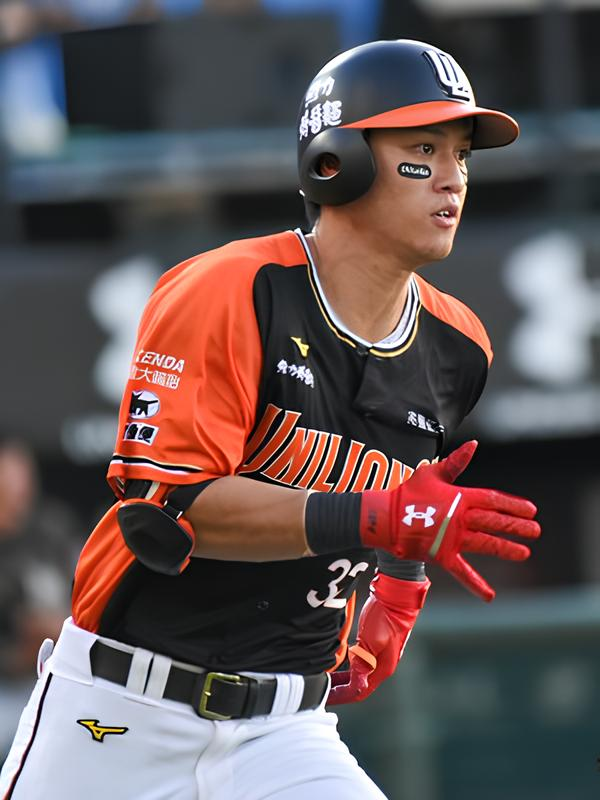

玩具人
| 守備位置 | 外野手 (Outfielder) |
|---|---|
| 投 / 打 | 右投 / 左打 |
| 身高 / 體重 | 180 cm / 88 kg |
| 出生日期 | 1994 / 07 / 28 |
| 學歷 | 文化大學 |
| 加盟年份 | 2016年 (選秀第一輪) |
蘇智傑，統一獅強力左打的代表人物。擁有極佳的長打爆發力，多次擊出關鍵全壘打，是球隊中心打線不可或缺的重砲手。
除了打擊火燙，他在外野的防守也相當穩健，曾多次獲得金手套獎肯定。球場上的拼勁與帥氣的笑容，讓他擁有極高的人氣。